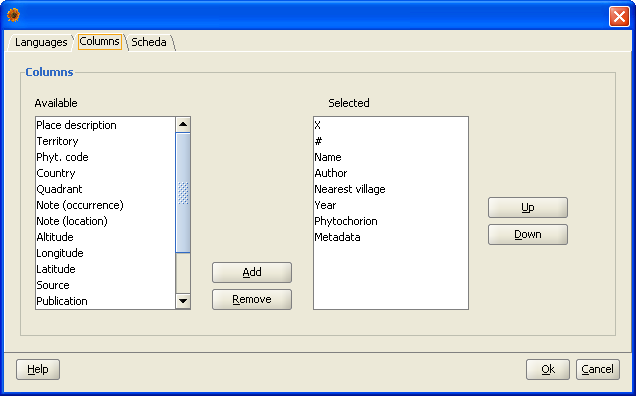
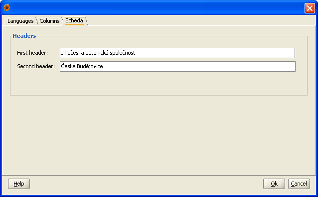

You can partially influence the behaviour of Plantlore in it's Settings dialog in the File menu.
The settings dialog contains three tabs. From that only the language setting requires restart of the application.
In the columns tab you can choose the columns and their order in that they should appear in the Overview.
Plantlore also offers a simple scheda customization. You can set the headlines of generated Scheda on the Scheda tab.
